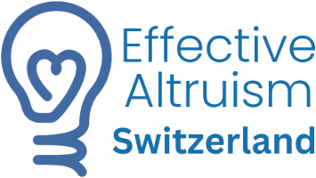
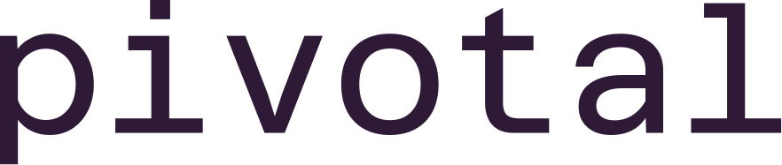
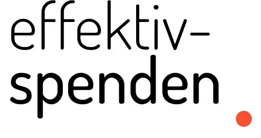

Residents
Organizations and individuals with a regular desk at PEAKS.
Impact works the same way: a few ways of doing good rise far above everything else. There are several such summits, and no single right one to climb. PEAKS is an office for people who search for the highest peaks they can reach, and then set out to climb them. People who stay open to changing paths as their map and the terrain shift, and who would rather climb together than alone.
A coworking space in the middle of Zurich, for everyone working on or curious about
Our free public coworking days are the easiest way to get to know the space and the people here. Apply first, and we'll send you the details.
Zeughausstrasse 31, 8004 ZurichPEAKS is home to a core of residents who work here every day, and its doors are open to coworkers and visitors from the community.
Organizations and individuals with a regular desk at PEAKS.
Already working in a high-impact field, or thinking about a career in one? Cowork with us on our public coworking days, or while you do a remote research fellowship.
Curious about the space, or in Zurich for a few days? Apply for a visit, come by and meet the people working here.
Work alongside like-minded professionals on high-impact projects, and connect with them over lunch.
Be part of the office community focused on making the world a better place through evidence-based approaches.
Our office is located in the heart of Zurich, with excellent transport connections and access to the city's thriving tech and research ecosystem.
Access to fully equipped desks with monitors in a cozy office, plus meeting rooms and comfortable break rooms.
Connect with the international effective altruism community through events, workshops and collaborative opportunities.
Come by to upskill in relevant cause areas, read and borrow books, and discuss your learnings with others over lunch.
PEAKS hosts a diverse and talented community of researchers, professionals and organizations, united by a shared commitment to using evidence and reason to tackle the world's most pressing problems.




EuroSafeAI
Zurich AI SafetyDoing a remote research fellowship such as SPAR or Algoverse? You're welcome to cowork from PEAKS while you do it.
Done a fellowship like MATS, Pivotal or ERA? Whether you're on an extension or continuing your research another way, you're welcome to join us.
Researching independently in any cause area, or visiting from abroad? You're welcome here too.
PEAKS is a short walk from Zurich main station (HB), with plenty of places to eat nearby.
Zeughausstrasse 31
8004 Zurich, Switzerland
Before your first visit, please apply for a visit or coworking. Once you're registered, you'll get detailed access instructions.
PEAKS regularly hosts events in collaboration with local groups, organizations and the broader Swiss effective altruism community. From relaxed gatherings of like-minded people to lightning talks and discussions, our events provide opportunities to learn and connect with the community.
Want to stay updated on all events? Check out the groups' event calendars below and RSVP directly through Luma.
Have a question this website doesn't answer, or another reason to get in touch? Reach out:
Curious about visiting or coworking? Please use the application form.